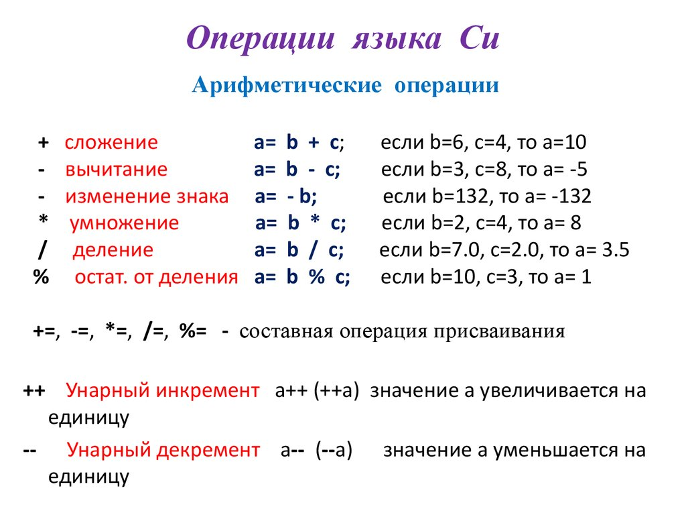

Язык программирования Си
Языки программирования являются одним из видов компьютерных языков и используются в компьютерном программировании для реализации алгоритмов.Сегодня мы познакомимся с одним из наиболее популярных языков программирования "C"(Си). В этой статье будут рассмотрены: история создания, краткий обзор языка, примеры кода.
Содержание
История создания
Язык программирования C был разработан в начале 1970-х годов в Белл Лабораториях компании AT&T (Bell Labs) Деннисом Ритчи. Он создал этот язык совместно с Кеном Томпсоном, чтобы разработать операционную систему Unix.
В то время уже существовали языки программирования, такие как Fortran и ALGOL, но они были ограничены в своих возможностях и не подходили для разработки операционных систем. Поэтому Ритчи и Томпсон решили создать новый язык, который был бы более эффективным и мощным для системного программирования.
Они начали работу над разработкой нового языка, который получил название C. Вдохновленные языком программирования B (предшественником C), они добавили новые возможности и усовершенствования. Разработка C была связана с созданием операционной системы Unix, которая требовала языка программирования для эффективной работы с аппаратным обеспечением и низкоуровневым кодом.
C продолжил развиваться в 70-х, особенно в период с 1977 по 1979, когда вышла первая книга по C. Книга "Язык программирования Си", написанная Брайаном Керниганом и Денисом Ритчи и опубликованная в 1978 стала библией программистов на Си.
Язык C был предназначен для написания компилируемых программ, что позволяло достичь высокой производительности и эффективности. Он предоставлял возможности работы с указателями, структурами и низкоуровневым управлением памятью, что делало его мощным инструментом для системного программирования.
Вместе с ростом популярности появились проблемы. Программисты, писавшие новые компиляторы брали за основу язык, описанный в K&R. К сожалению, в K&R некоторые особенности языка были описаны расплывчато, поэтому компиляторы часто трактовали их на своё усмотрение. Кроме того, в книге не было чёткого разделения между тем, что является особенностью языка, а что особенностью операционной системы UNIX. Ухудшало ситуацию и то, что после публикации K&R Си продолжал развиваться: в него добавлялись новые возможности и из него вырезались старые. Вскоре появилась очевидная необходимость в исчерпывающем, точном и соответствующем современным требованиям описании языка. Без такого стандарта стали появляться диалекты языка, которые мешали переносимости – сильнейшей стороне языка.
Брайан Керниган (Brian Kernighan), Деннис Ритчи (Dennis Ritchie) и Кен Томпсон (Ken Thompson)
Си разрабатывался в первую очередь для того, чтобы можно было легко и просто писать большие программы по всем правилам процедурного программирования и с наименьшим числом возможных ошибок.
Значимые отличительные черты языка программирования Си:
- понятная языковая база, отдельные библиотеки с математическими функциями, с функциями управления файлами и т.п.;
- направленность на процедурное программирование, что очень удобно с точки зрения использования структурного подхода к процессу программирования;
- параметры передаются в функцию по значению, не по ссылке. А для передачи по ссылке используются указатели.
Язык C стал одним из самых популярных языков программирования в мире благодаря своей эффективности, портируемости и простоте использования. Он стал основой для разработки множества других языков программирования, таких как C++, Objective-C и C#. Сегодня C широко используется для разработки операционных систем, встроенных систем, компиляторов, игр и других приложений.
Краткий обзор
 Несмотря на то, что Си не включает в себя встроенные компоненты по работе с вводом-выводом, распределению памяти, управлению процессами, его системное окружение позволяет подключать объектные модули с такими функциями. Этого вполне достаточно, чтобы разрабатывать программное обеспечение абсолютно любого уровня, как небольшие программы, так и комплекс сложных программных систем.
Несмотря на то, что Си не включает в себя встроенные компоненты по работе с вводом-выводом, распределению памяти, управлению процессами, его системное окружение позволяет подключать объектные модули с такими функциями. Этого вполне достаточно, чтобы разрабатывать программное обеспечение абсолютно любого уровня, как небольшие программы, так и комплекс сложных программных систем.
Указатели в Си позволяют создавать указатели и ссылаться на объекты таким же путем, как это делает компьютер. Арифметика указателей осуществляет доступ и манипуляции с адресами памяти. Си имеет препроцессор для обработки текстовых файлов перед компиляцией. Препроцессор может быть использован для любых текстовых файлов.
Таким образом, Си это гибкий язык программирования, позволяющий писать качественные программные продукты с высокой скоростью работы.
Синтаксис
В программах написанных на Си используются множество символов и множество представимых символов. Множество символов - это буквы, цифры, знаки пунктуации. Комбинирование этих символов создают конструкции языка. Множество представимых символов - это подмножество множества символов, состоящее из всех букв, цифр, символов которые можно представить как графически отдельные символы.
Программный код на Си может содержать только символы которые определены для множества символов. Лишь только комментарии, символьные константы и строковые литералы могут содержать любой символ. Другие, неверно используемые символы означают ошибку для компилятора Си, о чем он будет выводить сообщать.
Буквы и цифры
Множество символов Си включает в себя малые и большие буквы английского алфавита и 10 арабских цифр:
- большие английские буквы: A B C D E F G H I J K L M N O P Q R T U V W X Y Z;
- малые английские буквы: a b c d e f g h i j k l m n o p q r t u v w x y z;
- десятичные арабские цифры: 0 1 2 3 4 5 6 7 8 9.
Цифры и буквы используются для наименования ключевых слов, констант, идентификаторов.
Символы пробела
Язык Си включает пробельные символы - пробелы, перевод строки, табуляцию, новую страницу, возврат каретки, вертикальную табуляцию, новую строку. Пробельные символы разделяют символы программного кода друг от друга.
Последовательности
ESC-последовательности - специальные символьные комбинации, представляющие собой пробельные символы и неграфические символы в строках. Они используются для таких действий, как возврат каретки и табуляции и т.п.
Основные типы данных
Числа типа int бывают как 16-разрядные (они лежат в диапазоне от -32768 до 32767), так и 32-разрядные. Числа типа float обычно представляются 32-разрядными словами, имеющими по крайней мере 6 десятичных значащих цифр, и лежат приблизительно в диапазоне от 10-38 до 10+38.
Помимо int и float Си допускает еще несколько базовых типов для данных, это:
Базовые типы данных
| Тип данных |
Значение |
| char |
литера-единичный байт |
| short |
короткое целое |
| long |
длинное целое |
| double |
плавающее с двойной точностью |
Операции
Операции в Си как и в любом другом языке программирования представляют комбинации символов для работы с разными величинами. Некоторые из них представлены на картинке:

И это лишь малая часть библиотеки языка Си, язык программирования C - это мощный, эффективный и универсальный язык программирования, который предоставляет разработчикам полный контроль над аппаратным обеспечением и позволяет создавать высокопроизводительные приложения. Он обладает простым синтаксисом, что делает его отличным выбором для начинающих программистов.
Примеры кода
Первая программа, которую мы рассмотрим, — это «Hello World» — программа, которая выведет на экран строку текста «Hello, World!» («Здравствуй, мир!») и закончит своё выполнение.Первая строка — #include — означает «включи заголовок stdio.h». В этом заголовке объявляются функции, связанные с вводом и выводом данных.
Аббревиатуру stdioможно перевести как стандартный ввод-вывод (англ. standard input/output). Буква «h» после точки означает заголовок (англ. header). В заголовках (которые как правило представлены отдельными заголовочными файлами) обычно объявляются предоставляемые соответствующими им библиотеками функции, типы данных, константы и определения препроцессора.Английское слово void можно перевести как «пустота». Далее открываются фигурные скобки и идёт тело функции, в конце фигурные скобки закрываются. Функция main — главная функция программы, именно с нее начинается выполнение программы.
Тело функции, в свою очередь, определяет последовательность действий, выполняемых данной функцией — логику функции.
Далее идёт определение функции main.Это действие, в свою очередь, есть вызов функции puts стандартной библиотеки. В результате выполнения этого вызова, на стандартный вывод (которым, скорее всего, окажется экран или окно на экране) печатается строка Hello, world!.
Затем идёт команда return 0;, которая завершает выполнение функции с возвратом значения 0, определяемого стандартом (для функции main) как код успешного завершения:
#include <stdio.h>
int main() {
printf("Hello, World!");
return 0;
}
Вывод
2. Пример программы, вычисляющей сумму двух чисел:
#include
int main() {
int num1, num2, sum;
printf("Введите первое число: ");
scanf("%d", &num1);
printf("Введите второе число: ");
scanf("%d", &num2);
sum = num1 + num2;
printf("Сумма: %d\n", sum);
return 0;
}
3. Пример программы, определяющей, является ли число простым:
#include
int isPrime(int number) {
if (number <= 1) {
return 0;
}
for (int i = 2; i * i <= number; i++) {
if (number % i == 0) {
return 0;
}
}
return 1;
}
int main() {
int number;
printf("Введите число: ");
scanf("%d", &number);
if (isPrime(number)) {
printf("%d - простое число\n", number);
} else {
printf("%d - не является простым числом\n", number);
}
return 0;
}
Это всего лишь некоторые примеры кода на языке C. Язык C предоставляет широкие возможности для разработки различных программ, от простых до сложных. Некоторые из них программы на C являются наиболее часто задаваемыми вопросами на собеседованиях от базового до продвинутого уровня:
- Программа на C для печати вашего собственного имени;
- Программа на C для печати целого числа, введенного пользователем;
- Программа на C для умножения двух чисел с плавающей запятой.
Остальные примеры кода на С можно увидеть перейдя по данной ссылке:
примеры кода на С
Вообще, начинать изучение программирования с нуля лучше всего именно с языка Си, потому что это язык низкого уровня. Разобравшись в нем, вы усвоите важные базовые понятия процесса разработки. К тому же синтаксис многих других языков программирования, таких как С++, Java, С# (Си-шарп) построен именно на Си. Зная его, проще будет изучать и остальные.
Однако, стоит отметить, что C также имеет некоторые сложности и требует более тщательного управления памятью и безопасностью, особенно при работе с указателями. Неправильное использование указателей может привести к ошибкам и уязвимостям в программе.
В целом, язык C остается одним из самых важных и широко используемых языков программирования в индустрии. Он подходит для разработки различных типов приложений, от системного программного обеспечения до встроенных систем и игр.
"Trust the programmer" (Доверяйте программисту)
Список использованных тегов
- html
- head
- title
- link
- script
- body
- h1
- p
- h3
- ul
- li
- h2
- a
- img
- br
- div
- span
- ol
- table
- th
- tr
- td
- pre
- code
- strong
- em
- i
- strike
- caption
- meta
Список использованных свойств
- background
- color
- font-size
- margin
- line-height
- font-family
- src
- text-align
- text-indent
- float
- width
- height
- border-collapse
- border
- padding
- overflow-x
- border-radius
- display
- text-decoration
- border-style
- cursor
- margin-left
- margin-top
- margin-bottom
- margin-right
- padding-left
- padding-right
- padding-top
- padding-bottom
- list-style-image
- flex-direction
- align-items
- justify-content
- flex-wrap
- flex-basis
- flex
- letter-spacing
- text-transform
- text-shadow
- opacity